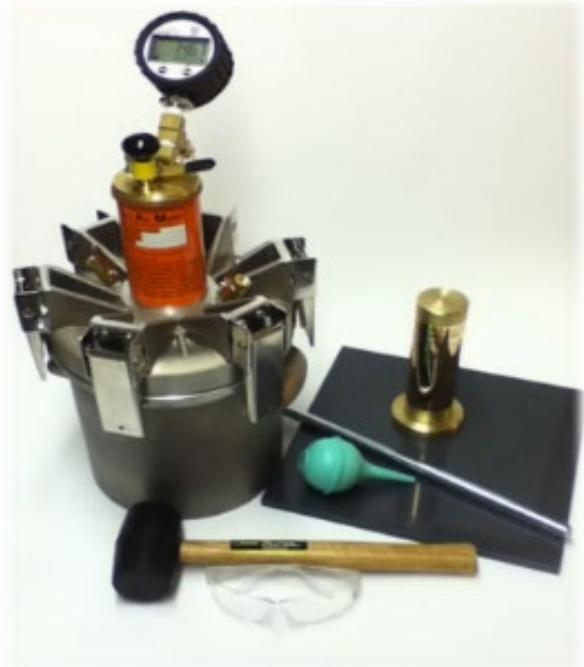
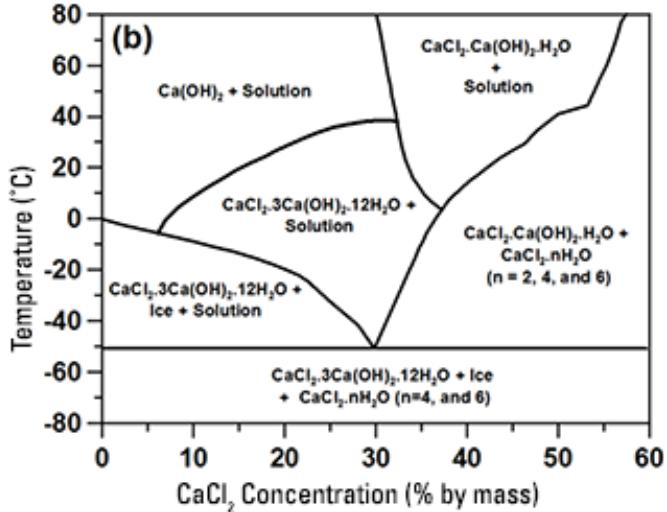
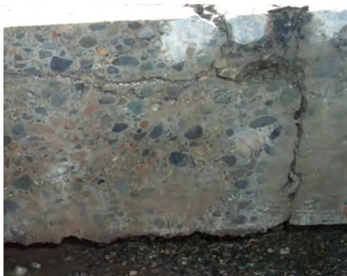

Air Void Reduction and Chemical Agent Impact on Concrete Durability
Air‑void reduction is the intentional creation of a stable, uniformly distributed network of microscopic air bubbles—introduced by an air‑entraining admixture—that lowers the effective degree of saturation and provides closely spaced pressure‑relief chambers so that expanding freezing water can be accommodated without tensile stress in the paste [1]. Chemical deicing agents such as sodium, calcium or magnesium chlorides infiltrate the pore structure, raise saturation, and react with calcium hydroxide to form expansive calcium oxychloride, whereas supplementary cementitious materials dilute and pozzolanically consume calcium hydroxide, converting it to additional C‑S‑H and thereby reducing permeability and mitigating this chemical attack [2]. By targeting 5–8 % total entrained air with a spacing factor ≤0.008 in., limiting loss‑on‑ignition of coal ash to <6 % (or <3 % in freeze‑thaw zones), and employing a low water‑to‑cement ratio, the concrete retains durability under repeated freezing cycles and exposure to deicing chemicals [3].
Sources (12)
Material purpose and applicability
The material is an intentionally entrained network of microscopic air bubbles—produced by adding an air‑entraining admixture to the concrete mix—that forms a stable, uniformly distributed air‑void system within the cement paste. This air‑void system lowers the effective degree of saturation and provides closely spaced pressure‑relief chambers (spacing factor ≤ 0.008 in., typically 5–6 % total air) so that freezing water can expand into the voids instead of generating tensile stresses in the paste. By doing so, it protects pavement slabs from freeze‑thaw cracking, surface scaling, spalling and loss of structural integrity, especially at joints where water may be trapped.
Chemical deicing agents (e.g., sodium chloride, calcium or magnesium chlorides) infiltrate the pore structure, raise saturation, and can react with calcium hydroxide to produce expansive calcium oxychloride. The inclusion of supplementary cementitious materials (SCMs) such as fly ash or slag dilutes calcium hydroxide and promotes pozzolanic reactions that convert CH to additional C‑S‑H, thereby reducing the potential for oxychloride formation and decreasing permeability. Together with the air‑void system, SCMs limit fluid ingress and mitigate deicer‑related chemical attack.
The effectiveness of the air‑void system can be compromised by high loss‑on‑ignition (unburnt carbon) in coal ash, which interferes with the performance of air‑entraining admixtures; specifications therefore limit LOI to less than 6 % overall and to less than 3 % in zones subject to freeze‑thaw cycles. Maintaining proper air content, bubble size, spacing, and SCM dosage ensures that the pavement retains durability under repeated freezing conditions and exposure to deicing chemicals.
“Air‑void reduction is the intentional creation of a stable, uniformly distributed network of microscopic air bubbles—air voids—in the cement paste.” (2019-12_IMCP_manual) “Chemical agents such as deicing salts can react with calcium hydroxide in the cement matrix to form damaging calcium oxychloride; using supplementary cementitious materials (SCMs) reduces the amount of calcium hydroxide through dilution and pozzolanic reactions, mitigating this chemical attack.” (2016_joint_deterioration_in_pvmts_guide) “Entrained air voids act as pressure‑relief valves, providing space for the water/ice to expand and relieve pressure on the surrounding concrete.” (concrete_pvmt_distress_assessments_and_solutions_guide_w_cvr) “Unburnt carbon present in the coal ash can interfere with air entrainment admixtures, limiting the intended entrained air‑void system.” (ACPTP-2022-4_QC_QA_of_concrete_airfield_pvmt_manual_w_cvr_508) [1][2][3][5][7][8][9][11][12]
The figure below illustrates how air-entraining admixture molecules stabilize these critical air voids.
 Stabilization of air voids by air-entraining admixture molecules [2]
Stabilization of air voids by air-entraining admixture molecules [2]
The figure depicts a schematic interface between an air bubble and water, where rod-shaped molecules labeled as the ‘Air-entraining agent’ are positioned at the boundary. These molecules stabilize the voids by acting as pressure-relief valves that provide space for expanding ice to accommodate without causing tensile stress in the paste.
[1] — Ch. 2 (pp. 16–17); [2] — Ch. 3 (pp. 98–100), Ch. 6 (pp. 187–191); [3] — Ch. 5 (pp. 179–180); [5] — Ch. 4 (p. 44); [7] — Chemical Attack by Deicing Sal… (pp. 19–20), Freezing and Thawing (pp. 15–19); [8] — Ch. 4 (pp. 200–208); [9] — 2. Factors Influencing Long-Li… (pp. 27–28); [11] — Air Void Structure (p. 11), Freeze Thaw and Scaling (pp. 15–16); [12] — Ch. 3 (pp. 23–24)
Composition and characteristics
The material that provides freeze‑thaw durability and resistance to deicing chemicals is a cement paste engineered with three interrelated constituents: an entrained air‑void system, supplementary cementitious materials (SCMs), and a low water‑to‑cement ratio. The guides describe the air‑void system as “stable bubbles ranging from about 0.002 to 0.050 in. in diameter” that are “introduced by an air‑entraining admixture at a volume of roughly five to eight percent (six percent is the typical target for severe exposure).” These bubbles are “stabilized air bubbles … called air voids or entrained air,” and their stability is achieved because “molecules of air‑entraining agent are attracted to water at one end and to air at the other end, reducing surface tension at the air‑water interface.” The required physical characteristics are a “less than or equal to 0.008 in.” spacing factor (or a spacing factor about 0.20 mm) and a “high specific surface,” with “percent total air … about 5 and 8 percent” and “about 5–6 percent total air in a mixture” providing the necessary “pressure‑relief valves” for the ≈9 % expansion of water when it freezes. The system keeps the “critical degree of saturation … assumed to be 0.85” (≈85–88 %) so that ice pressure does not develop.
SCMs are specified as “fly ash, slag, silica fume, metakaolin or limestone” that replace “20‑35 % of Portland cement” (or “≥30 % volume”) and act by “consume calcium hydroxide … through pozzolanic reactions,” thereby “converting calcium hydroxide to additional calcium silicate hydrate” and “reduces permeability.” The guides note that “loss on ignition (LOI) should be monitored” with limits “less than 6 %” and “< 3 % in freeze‑thaw areas” to avoid interference with air entrainment. SCMs also “lower the amount of calcium hydroxide formed, which in turn limits harmful reactions with chloride‑based deicers,” and they “slow fluid penetration and reduce chemical attack from chlorides.”
A low water‑to‑cement ratio is described as “≈0.40–0.45” (or “≤ 0.42, ideally ≈0.40”) which “limits capillary connectivity” and “reduces the network of connected pores.” This low w/c ratio can “offset the strength loss associated with entrained air (approximately 5 % compressive strength reduction per percent air).”
Fine aggregate grading is noted as “material retained on #30–#50 sieves … increases air entrainment,” while high‑range water reducers may “show a shift toward larger void sizes.” Together, these constituents—stable micro‑air bubbles, controlled air content and spacing, reduced CH via SCMs, low w/c ratio, appropriate aggregate grading, and compatible admixture dosages—define the composition, structure, and physical characteristics that govern concrete’s resistance to freeze‑thaw cycles and chemical deicing agents. [1][2][3][5][6][7][8][9][10][11]
[1] — Ch. 2 (pp. 12–17), Ch. 3 (pp. 20–22); [2] — Ch. 3 (pp. 98–138), Ch. 6 (pp. 187–189), Ch. 7 (pp. 216–217), Ch. 10 (p. 315); [3] — Ch. 5 (pp. 179–180); [5] — Ch. 4 (p. 44); [6] — Ch. 6 (pp. 63–64); [7] — Chemical Attack by Deicing Sal… (pp. 19–20), Freezing and Thawing (pp. 15–19); [8] — Ch. 4 (pp. 200–208), Ch. 19 (p. 489); [9] — 2. Factors Influencing Long-Li… (pp. 27–28); [10] — 2 Types and Mechanisms of Join… (pp. 11–21); [11] — Air Void Structure (p. 11), Freeze Thaw and Scaling (pp. 15–16)
The properties of the air‑void system and its resistance to chemical agents are highly sensitive to any variation in mix composition, source material, processing steps, or proportioning. Variations in mixture composition—water‑to‑cement ratio, amount and source of air‑entraining admixture (AEA), and the type and proportion of supplementary cementitious materials (SCMs)—directly control both the internal air‑void system and the chemical susceptibility of the paste. Any change in source or amount of any of the mix ingredients may change the air‑void system, requiring re‑evaluation of AEA dosage and mixing procedures. Higher unburnt carbon, expressed as loss on ignition, reduces the effectiveness of air‑entraining admixtures, compromising the air‑void system that protects against freeze‑thaw damage; therefore limits on LOI are imposed for mixes exposed to freezing cycles. A lower w/c ratio (generally 0.40–0.45) produces finer, less connected pores that absorb water more slowly, while a higher air content (typically 5–8 % with a minimum of 4 %) creates unsaturated voids that keep the overall degree of saturation below the critical ~0.85 threshold. Supplementary cementitious materials such as Class F fly ash, silica fume, slag, or Class C fly ash consume calcium hydroxide through dilution and pozzolanic reactions, which diminishes formation of expansive calcium oxychlorides when de‑icing salts penetrate the concrete and refines pore structure, further lowering permeability. However, SCMs with high carbon content or very fine particles can destabilize the soap‑like coating on entrained bubbles, increasing the required AEA dosage and potentially raising the spacing factor if not properly managed. Mixing temperature, mixing time, and post‑mix handling (e.g., prolonged haul, excessive vibration, late water addition) also affect bubble stability; over‑finishing or aggressive vibration can strip surface air, reducing the protective void network. Consequently, careful proportioning of w/c ratio, targeted 5–8 % entrained air with spacing factor ≤0.008 in., judicious selection and dosage of SCMs, control of LOI in fly ash, and disciplined processing practices are essential to maintain a stable air‑void system, keep concrete below critical saturation, limit chemical attack, and achieve durable freeze‑thaw performance. [1][2][3][5][6][7][8][9][10][11]
The following figure illustrates how variations in water‑to‑cement ratio and air volume affect the time required for concrete to reach critical saturation.
 The influence of w/c ratio and air volume on the time required for 20 percent of the concrete to reach critical saturation (assuming 5 percent COV in w/c ratio and 15 percent COV in air content) [1]
The influence of w/c ratio and air volume on the time required for 20 percent of the concrete to reach critical saturation (assuming 5 percent COV in w/c ratio and 15 percent COV in air content) [1]
The figure plots the probability of failure against the time required for concrete to reach critical saturation, comparing a deterministic model with probabilistic scenarios involving different entrained air volumes.
[1] — Ch. 2 (pp. 12–17), Ch. 3 (pp. 20–22), Ch. 4 (pp. 26–27); [2] — Ch. 3 (pp. 99–136), Ch. 6 (pp. 187–189), Ch. 7 (pp. 216–217), Ch. 9 (p. 269); [3] — Ch. 5 (pp. 179–180); [5] — Ch. 4 (p. 44); [6] — Ch. 6 (pp. 63–64); [7] — Chemical Attack by Deicing Sal… (pp. 19–20), Freezing and Thawing (pp. 15–19); [8] — Ch. 4 (pp. 88–208); [9] — 2. Factors Influencing Long-Li… (pp. 27–28); [10] — 2 Types and Mechanisms of Join… (pp. 13–26); [11] — Air Void Structure (p. 11), Freeze Thaw and Scaling (pp. 15–16)
Key material properties
Physical performance is governed by the air‑void system and moisture state. The concrete must retain a critical degree of saturation—approximately 85 % for typical mixes—marks the point at which ice pressure can initiate cracking. Sufficient entrained air, typically between 5 % and 8 %, together with a high count of small, closely spaced bubbles (spacing factor ≤0.008 in., specific surface high enough to keep most paste within that distance) provides the void space for expanding ice and limits capillary porosity. Low water‑to‑cement ratios (≤0.45, often <0.42) and reduced paste content lower permeability, which is reflected in higher electrical resistivity and formation factor values.
Mechanical durability depends on the balance between air content and strength. For every 1 percent entrained air, concrete loses about 5 percent of its compressive strength, so specifications limit minimum air to preserve load‑bearing capacity while still relieving tensile stresses generated by ice expansion. The cement paste must be capable of withstanding internal stresses caused by the expansion of freezing moisture within the matrix, and differences in coefficient of thermal expansion between aggregate and paste further influence crack development.
Chemical resistance is linked to calcium hydroxide availability and supplementary cementitious materials (SCMs). Calcium chloride will react with the calcium hydroxide reaction product from cement hydration to form expansive calcium oxychloride; SCMs dilute the cement and pozzolanically consume CH, thereby suppressing oxychloride formation. Maintaining low loss‑on‑ignition in fly ash (<6 % generally, <3 % in severe zones) and keeping total alkali content below 3 % support a stable air‑void system. Reduced CH also limits chloride‑induced corrosion, as indicated by higher electrical resistivity and favorable formation factor.
Thermal considerations involve freeze‑thaw cycling and solution chemistry. The freezing point of a brine solution varies with the concentration of the chemical, so higher salt concentrations lower the temperature at which ice forms and increase osmotic pressures. Phase change to calcium oxychloride occurs between 0 °C and 50 °C, adding additional expansion stresses. Repeated temperature swings generate thermal shock that must be absorbed by the air‑void network. [1][2][3][5][6][7][8][9][10][11][12]
[1] — Ch. 2 (pp. 12–17), Ch. 3 (pp. 20–22), Ch. 4 (pp. 26–27); [2] — Ch. 3 (pp. 98–136), Ch. 6 (pp. 186–191), Ch. 7 (pp. 212–217), Ch. 9 (pp. 269–284), Ch. 10 (p. 315); [3] — Ch. 5 (pp. 179–180); [5] — Ch. 4 (p. 44); [6] — Ch. 6 (pp. 63–64); [7] — Chemical Attack by Deicing Sal… (pp. 19–20), Freezing and Thawing (pp. 15–19); [8] — Ch. 4 (pp. 200–215), Ch. 13 (pp. 47–48), Ch. 19 (p. 489); [9] — 2. Factors Influencing Long-Li… (pp. 27–28); [10] — 2 Types and Mechanisms of Join… (pp. 11–21); [11] — Air Void Structure (p. 11), Freeze Thaw and Scaling (pp. 15–16); [12] — Ch. 2 (pp. 19–21), Ch. 3 (pp. 23–24)
Air content in fresh concrete “is measured by tests such as ASTM C231/C231M and AASHTO T 152.” “Air content between 5 and 8 percent using T 152, T 196, or TP 118.” The air‑void system “includes total air content, spacing factors, and the specific surface.” The spacing factor is defined as “the maximum distance in the cement paste from the periphery of an air void; the unit is length (ASTM C457, 2016).” Target values are “A value of less than or equal to 0.008 in. is desired.” An alternative limit is “spacing factor of bubbles should be less than approximately 0.20 mm.” The Super Air Meter provides a “SAM number … has been correlated to the air‑void spacing factor obtained through ASTM C457 and the durability factor of concrete as assessed through AASHTO T 161.” “Testing for spacing factors by Super Air Meter (SAM) or ASTM C457 will give better assurance of freeze‑thaw durability.” Air‑void parameters can also be measured on hardened concrete “according to ASTM C457, or the Air‑Void Analyzer (AVA) can be used on a fresh mortar sample.” The most common air‑content test “The most commonly used air content test (ASTM C 231) measures the total percent of air in a concrete mixture.” Critical saturation is identified by “If more than about 85 percent of the voids (including air voids) are filled with water, damage is incurred rapidly” and “Concrete that is less than 85% saturated can survive, while saturation greater than this will likely result in permanent damage.” Moisture uptake is evaluated by sorptivity: “The rate of water absorbed into a conditioned thin concrete sample is measured over a period of time.” Chemical de‑icing impact is quantified by “Low temperature differential calorimetry offers a method to quantify the amount of calcium oxychloride that may be produced by a given binder” and damage potential is described as “Calcium and magnesium chloride result in the formation of calcium oxychloride, which is expansive and can cause damage and cracking of the concrete.” Scaling resistance is classified using “Scaling Resistance of Concrete Surface Exposed to Deicing Chemicals – ASTM C672.” The effect of supplementary cementitious materials is monitored through loss‑on‑ignition: “loss on ignition (LOI) should be monitored,” “A LOI not exceeding 3% is to be used in areas subject to freeze‑thaw cycles to help ensure an adequate entrained airvoid system,” and “The impact of LOI on air‑entraining admixtures can be assessed using ASTM C1827 Foam Index Test results.” Permeability, a proxy for fluid ingress, is measured by “Permeable voids test (ASTM C642) was added in 2006 and compared to rapid chloride penetration (ASTM C1202).” [1][2][3][6][7][8][9][10][11][12]
The following figure illustrates the Super Air Meter (SAM) used to assess air-void parameters.

Super Air Meter (SAM) apparatus developed by Tyler Ley. [8]The image displays the Super Air Meter, a device consisting of a cylindrical metal vessel with an array of hinged arms and a pressure gauge assembly mounted on top. This apparatus is used to measure both the air void spacing and air volume of plastic concrete, providing data that helps users better understand the freeze-thaw durability of concrete before it is placed.
[1] — Ch. 2 (pp. 12–17), Ch. 3 (pp. 21–22); [2] — Ch. 3 (pp. 98–99), Ch. 6 (p. 187), Ch. 7 (pp. 212–217), Ch. 9 (pp. 269–284); [3] — Ch. 5 (pp. 179–180); [6] — Ch. 6 (pp. 63–64); [7] — Freezing and Thawing (pp. 15–19); [8] — Ch. 4 (pp. 200–208), Ch. 19 (p. 489); [9] — 2. Factors Influencing Long-Li… (pp. 27–28); [10] — 2 Types and Mechanisms of Join… (pp. 11–21); [11] — Air Void Structure (p. 11), Freeze Thaw and Scaling (pp. 15–16); [12] — Ch. 2 (pp. 19–21), Ch. 3 (pp. 23–24)
Behavior and mechanisms
Durability of concrete exposed to repeated freezing–thawing cycles and de‑icing chemicals is governed by intertwined physical, chemical and mechanical mechanisms.
Physical mechanisms: When water in capillary pores freezes it expands – “Water expands about 9 percent when it freezes” – generating hydraulic pressures that can crack the matrix. Damage initiates once the degree of saturation approaches a critical value; “once the void space in concrete becomes critically saturated, meaning approximately 85 to 88 percent of the void space is saturated, concrete will crack with only one freeze‑thaw cycle” and “If more than about 85 percent of the voids (including air voids) are filled with water, damage is incurred rapidly”. Below that threshold, “For degrees of saturation below the critical DOS (e.g., 85 percent in Figure 2-1), freeze‑thaw damage is generally not observed to occur even after a large number of freezethaw cycles.” The pressure can be mitigated by entrained air: “One role of air is to reduce the DOS and enable the pressures generated during ice formation to be reduced” and “The role of entrained air voids in protecting concrete against freeze‑thaw damage is to provide additional void space that remains largely unsaturated even as the concrete’s gel and capillary pores become saturated.” Air therefore lowers the effective DOS – “Entrained air can improve freeze‑thaw durability by reducing the DOS in concrete” – and prolongs the time to critical saturation – “Air entrainment provides more void space, prolonging the time to critical saturation.” Hydraulic pressures were first described by Powers: “Powers (1945) attributed freeze‑thaw damage to excessive hydraulic pressures resulting from the expansion of ice.”
Chemical mechanisms: De‑icing salts introduce chloride ions that react with calcium hydroxide in the paste. “Calcium chloride will react with the calcium hydroxide reaction product from cement hydration to form expansive calcium oxychloride” and “MgCl2 goes through a two‑step process, first reacting with calcium hydroxide to form brucite and CaCl2.” The resulting phase change is highly expansive – “The phase change to calcium oxychloride is highly expansive, with the resulting damage … due to crystallization pressures.” Hygroscopic salts retain moisture – “Some chemical deicers are hygroscopic, meaning that they will absorb water from the atmosphere at ambient temperatures” and “salts hold moisture in the concrete and can work to increase the saturation of concrete,” further driving the concrete toward critical DOS. Supplementary cementitious materials (SCMs) mitigate these reactions by consuming calcium hydroxide: “SCMs lower the calcium hydroxide content of the paste, which reduce the amount of calcium hydroxide in the concrete, thereby preventing deleterious reactions with chloride‑based deicers” and “SCMs convert calcium hydroxide (CH) in the cement to calcium silicate hydrate (CSH), which not only improves strength but lowers the permeability of concrete.” The conversion reduces oxychloride formation – “By tying up or converting some of the CH with the use of fly ash or slag, the formation of damaging calcium oxychloride is substantially reduced by as much as 45%.” However, high loss‑on‑ignition (LOI) in fly ash interferes with air entrainment: “Increasing loss‑on‑ignition (LOI) from unburned carbon in fly ash will significantly increase the amount of AEA required to achieve a given air content and likely reduce stability of the air voids,” leading to limits such as “maximum LOI of less than 6%” and “A LOI not exceeding 3% is to be used in areas subject to freeze‑thaw cycles.” Low water‑to‑cement ratios further limit fluid transport – “Use concrete mixture designs that provide low w/c ratios to reduce concrete fluid transport” and “Capillary porosity is a key component of the overall concrete porosity, and controlling it through control of the w/c ratio is a necessary step for controlling water ingress into the concrete.”
Mechanical mechanisms: The protective air‑void system must meet specific geometric criteria. A fine, well‑distributed network is required – “A value of less than or equal to 0.008 in. is desired” and “The spacing factor of bubbles should be less than approximately 0.20 mm, which is traditionally achieved by ensuring that there is about 5–6 percent total air in a mixture.” Air‑void quality is described by “Air‑void systems are characterized by spacing factor and specific surface.” Achieving the target air content incurs a strength penalty – “for every 1 percent entrained air, concrete loses about 5 percent of its compressive strength” – and improper handling can degrade the system. Extended mixing, high slump, or excessive vibration shift bubble size or strip air: “Extended mixing will exacerbate the problem,” “Excessive vibration may remove air from the concrete,” and “Over‑vibrations can cause the loss of air voids.” When air bubbles are not uniformly distributed, durability suffers – “If the entrained air bubbles are not properly distributed, the pavement may experience premature failure from freeze‑thaw damage” and “Premature pavement distresses caused by freeze‑thaw damage are often directly attributable to an inferior air‑void system in the concrete.” Proper testing of spacing factor (e.g., SAM or ASTM C457) and total air content ensures compliance.
In summary, freeze‑thaw durability is achieved when the physical expansion of freezing water is buffered by a correctly designed air‑void network, chemical aggressors are limited by low CH availability through SCMs and controlled moisture ingress via low w/c ratios, and mechanical practices preserve the integrity of the entrained air throughout mixing, placement and curing. [1][2][3][5][6][7][8][9][10][11][12]
[1] — Ch. 2 (pp. 12–17), Ch. 3 (pp. 20–22); [2] — Ch. 3 (pp. 98–136), Ch. 6 (pp. 186–189), Ch. 7 (pp. 212–217), Ch. 9 (pp. 269–284), Ch. 10 (p. 315); [3] — Ch. 5 (pp. 179–180); [5] — Ch. 4 (p. 44); [6] — Ch. 6 (pp. 63–64); [7] — Chemical Attack by Deicing Sal… (pp. 19–20), Freezing and Thawing (pp. 15–19); [8] — Ch. 4 (pp. 200–208), Ch. 13 (pp. 47–48); [9] — 2. Factors Influencing Long-Li… (pp. 27–28); [10] — 2 Types and Mechanisms of Join… (pp. 11–21); [11] — Air Void Structure (p. 11), Freeze Thaw and Scaling (pp. 15–16); [12] — Ch. 3 (pp. 23–24)
Durability and deterioration
The merged assessment identifies that freeze‑thaw damage initiates when the concrete’s degree of saturation (DOS) reaches a critical level—about 85 % of the void space filled with water—at which point even a single freezing cycle can cause cracking. Entrained air lowers the initial DOS by providing additional voids that remain largely unsaturated, thereby delaying the approach to this threshold. Across the guides, satisfactory frost resistance is linked to an air‑void system composed of many small, closely spaced bubbles; “For satisfactory frost resistance, an air‑void system with closely spaced small bubbles is needed.” Adequate total air content (generally 4–8 %) together with a spacing factor ≤0.008 in (≈0.20 mm) and high specific surface ensures that expanding ice has nearby pressure‑relief chambers.
When the air‑void distribution is poor—due to low air content, clustering around aggregates, loss of air during mixing or vibration, or interference from unburnt carbon in supplementary cementitious materials—the concrete exhibits higher permeability, reduced compressive strength (≈5 % loss per 1 % entrained air), and a faster rise toward critical saturation. “Unburnt carbon present in the coal ash can interfere with air‑entraining admixtures,” prompting limits on loss‑on‑ignition and alkali content to preserve void stability.
Chemical deicers exacerbate these mechanisms. Chloride salts infiltrate the pore network, become concentrated during drying, and raise the degree of saturation; hygroscopic deicers further draw moisture into the matrix. In addition, “Calcium chloride will react with the calcium hydroxide reaction product from cement hydration to form expansive calcium oxychloride,” producing crystallization pressures that cause scaling, joint shadowing, and radial cracking even above 0 °C. Magnesium chloride can generate brucite, another expansive phase. The presence of calcium hydroxide also drives other deleterious reactions; supplementary cementitious materials mitigate this by diluting CH and converting it to C‑S‑H, thereby reducing oxychloride formation while also lowering permeability.
Secondary durability concerns include D‑cracking of aggregates with critical pore sizes, alkali‑aggregate reaction, and secondary ettringite deposition that can fill air voids under saturated conditions, further compromising the pressure‑relief function. High water‑to‑cement ratios increase fluid transport and initial DOS, accelerating both freeze‑thaw damage and chloride‑induced corrosion.
Collectively, the dominant deterioration mechanisms are: (1) attainment of critical saturation leading to ice‑induced tensile stresses; (2) insufficient or unstable air‑void systems that fail to provide adequate relief space; (3) chemical expansion from oxychloride or brucite formation; and (4) increased permeability facilitating moisture and chloride ingress. Mitigation strategies emphasized across the guides include low w/c mix designs, proper dosage and stability of air‑entraining admixtures, control of SCM quality (LOI ≤ 3 %), adequate total air and spacing factor, and limiting deicer concentrations. [1][2][3][5][6][7][8][9][10][11][12]
The figure below illustrates how these deterioration mechanisms manifest as freeze-thaw damage.
 A concrete cylinder exhibiting severe freeze-thaw damage with a vertical split and surface spalling. [8]
A concrete cylinder exhibiting severe freeze-thaw damage with a vertical split and surface spalling. [8]
The image shows a cylindrical concrete specimen that has fractured vertically along its central axis, revealing internal deterioration. The surface of the cylinder displays extensive flaking and loss of material, leaving the remaining aggregate exposed as described in the source context.
[1] — Ch. 2 (pp. 12–17), Ch. 3 (pp. 20–22), Ch. 4 (pp. 26–27); [2] — Ch. 3 (pp. 98–136), Ch. 6 (pp. 186–191), Ch. 7 (pp. 212–217), Ch. 9 (pp. 269–284); [3] — Ch. 5 (pp. 179–180); [5] — Ch. 4 (p. 44); [6] — Ch. 6 (pp. 63–64); [7] — Chemical Attack by Deicing Sal… (pp. 19–20), Freezing and Thawing (pp. 15–19); [8] — Ch. 4 (pp. 88–208), Ch. 13 (pp. 47–48), Ch. 19 (p. 489); [9] — 2. Factors Influencing Long-Li… (pp. 27–28); [10] — 2 Types and Mechanisms of Join… (pp. 11–26); [11] — Air Void Structure (p. 11), Freeze Thaw and Scaling (pp. 15–16); [12] — Ch. 2 (pp. 19–21), Ch. 3 (pp. 23–24)
Material characteristics that increase the susceptibility of concrete to air‑void reduction and chemical‑agent attack include a high water‑to‑cement (w/c) ratio, which creates excess capillary porosity and raises permeability; “Use concrete mixture designs that provide low w/c ratios to reduce concrete fluid transport.” Insufficient or poorly distributed entrained air also heightens risk – when the spacing factor exceeds the durability threshold, freezing water in capillary pores generates high pressures that crack the paste: “Insufficient or poorly distributed entrained air; when the spacing factor exceeds the durability threshold, freezing water in capillary pores generates high pressures that crack the paste.” Large, sparsely spaced voids or clustering of air around aggregates further raise permeability: “Large, sparsely spaced voids or clustering of air around aggregates—often caused by non‑Vinsol air‑entraining admixtures… reduce strength and raise permeability.” Carbon impurities from supplementary cementitious materials (SCMs) or aggregates degrade the air‑void structure: “Carbon impurities from supplementary cementitious materials or aggregates degrade the air‑void structure.” High residual calcium hydroxide (CH) content provides a source for expansive oxychlorides when chloride deicers are present; CH is soluble in water and its solubility increases as temperature decreases, making it especially reactive with deicing salts: “CH is soluble in water. Further, the solubility of CH increases as the temperature decreases.” and “CH dissolution in the presence of deicing salts is a key mechanism in the calcium oxychloride attack mechanism.” Excess calcium‑chloride accelerators (especially added dry) promote rapid stiffening, drying shrinkage, reinforcement corrosion and later‑age strength loss without providing antifreeze protection: “Excess calcium‑chloride accelerators (especially added dry) promote rapid stiffening, drying shrinkage, reinforcement corrosion and later‑age strength loss; they do not provide antifreeze protection for early‑age concrete.” High concentrations of chloride deicers react with abundant Ca(OH)₂ to form expansive oxychlorides: “High concentrations of chloride deicers react with abundant Ca(OH)₂ to form expansive oxychlorides.” Hygroscopic chemical deicers continuously draw moisture from the atmosphere, keeping surfaces saturated and accelerating freeze‑thaw deterioration: “Hygroscopic chemical deicers continuously draw moisture from the atmosphere, keeping surfaces saturated and accelerating freeze‑thaw deterioration.” Aggressive salts such as calcium or magnesium chloride raise saturation levels above the critical degree of saturation (≈85 %): “When more than about 85 % of the voids (including entrained air) are filled with water, damage occurs rapidly.” Poor drainage, trapped moisture in joints, and failed sealants further increase water retention. Unburnt carbon in coal ash interferes with air‑entraining admixtures; specifications therefore limit loss on ignition (LOI) to less than 6 % generally and to no more than 3 % where freeze‑thaw exposure is expected: “Unburnt carbon present in the coal ash can interfere with air entraining admixtures”; “FAA specifications limit the loss on ignition (LOI) of coal ash, requiring a maximum LOI of less than 6%”; “A LOI not exceeding 3% is to be used in areas subject to freeze‑thaw cycles.” Weak or porous aggregates (shale, soft rock, weak chert) increase permeability and promote D‑cracking: “Aggregates containing shale, soft porous rock or weak chert have low resistance to weathering and increase permeability.”
Conversely, characteristics that reduce susceptibility are well documented. A low w/c ratio (≤0.42–0.45) limits capillary porosity; the guides advise: “Use concrete mixture designs that provide low w/c ratios to reduce concrete fluid transport.” An adequate, well‑distributed entrained‑air system—typically 5 to 8 percent total air with a spacing factor ≤0.008 in and a specific surface (SAM) below 0.20—keeps the degree of saturation below the critical level: “Concrete that contains a high volume of well‑distributed entrained air (typically 5–8 percent total air and a SAM number below 0.20)… keeps its degree of saturation below the critical level of about 85 percent, and therefore resists freeze‑thaw damage for many decades”; “spacing factor of 0.008 in. or less will be adequate to protect concrete.” The importance of proper air‑void parameters is reinforced: “Have entrained air‑void systems with appropriate parameters for frost resistance.” SCMs dilute cement, consume CH through pozzolanic reactions and provide a filler effect that reduces permeability: “Use supplementary cementitious materials (SCMs) in the mixture”; “This reduces Ca(OH) (or CH) in concrete due to both dilution and pozzolanic reactions”; “All SCMs provide a filler effect in which concrete permeability is reduced.” The recommended replacement level is at least 30 percent of cement volume: “SCM should be used to replace the cement with a volume of at least 30 percent.” Proper curing—avoiding exposure to deicing chemicals for a minimum of 30 days (longer when SCMs are present)—limits early‑age CH dissolution: “It is recommended that newly placed concrete not be exposed to deicing chemicals for at least 30 days”. Maintaining low LOI in fly ash (<6 %, <3 % for freeze‑thaw zones) preserves the air‑void system, and controlling admixture dosage, mixing time, and avoiding water addition after initial mixing prevent clustering of air: “Mixtures with finer cement and increasing cement content will require a higher dosage of admixture to achieve the same air content.” Over‑finishing should be avoided because it may cause loss of surface air: “Over‑finishing should be avoided because it may cause loss of air at the surface.” Effective drainage, sealed joints, and limiting deicer concentration further keep saturation below critical levels: “For degrees of saturation below the critical DOS (e.g., 85 percent …), freeze‑thaw damage is generally not observed…”; “Air behind the paver should be at least 5%”.
Exposure conditions that exacerbate deterioration are also identified. Repeated wet freeze‑thaw cycles that drive concrete saturation above ≈85 % rapidly generate internal pressures: “When more than about 85 % of the voids … are filled with water, damage occurs rapidly.” Continuous accumulation of calcium or magnesium chloride brines, especially when applied to dry pavement, raises moisture content and promotes expansive oxychloride formation: “The use of significant quantities and/or potentially aggressive deicing salts”; “the calcium hydroxide present in typical HCP reacts with CaCl2 to form calcium oxychloride.” Early exposure to sub‑freezing temperatures before sufficient strength is gained, poor drainage, trapped water in joints, long haul times or extended mixing/vibration that cause air loss (>2 %) all increase risk. Hygroscopic deicers further sustain high surface moisture.
Mitigating exposure involves keeping the concrete’s degree of saturation below the critical threshold, limiting deicer concentration, using non‑hygroscopic salts, providing effective drainage and joint sealants, applying sealers, and observing a minimum 30‑day drying period before deicer application: “Use concrete sealants and concrete mixture designs incorporating SCMs to slow deicer ingress”; “Limiting the maximum w/cm ratio consistently to below 0.42”; “A spacing factor of 0.008 in. in concrete behind the paver”. Field practices that control temperature, mixing time, transport duration, and admixture dosage preserve the air‑void system throughout placement and finishing, thereby reducing susceptibility to both freeze‑thaw damage and chemical‑agent attack. [1][2][3][5][6][7][8][9][10][11][12]
The following figure illustrates how inadequate joint sealing can lead to saturation and subsequent micro-cracking in concrete.
 Longitudinal freeze damage in a concrete core caused by water saturation from a failed joint sealant. [8]
Longitudinal freeze damage in a concrete core caused by water saturation from a failed joint sealant. [8]
The image displays a cylindrical concrete core with significant longitudinal cracking and spalling along its side, exposing the internal aggregate structure. A red line marks the top surface of the specimen, indicating the location where water infiltration likely occurred through a joint. Increasing the saturation of concrete will also decrease its ability to resist freezing because there is more water in the system than can be accommodated when freezing occurs.
[1] — Ch. 2 (pp. 12–17), Ch. 3 (pp. 20–22), Ch. 4 (pp. 26–27); [2] — Ch. 3 (pp. 98–136), Ch. 6 (pp. 186–191), Ch. 7 (pp. 212–217), Ch. 9 (pp. 269–284); [3] — Ch. 5 (pp. 179–180); [5] — Ch. 4 (p. 44); [6] — Ch. 6 (pp. 63–64); [7] — Chemical Attack by Deicing Sal… (pp. 19–20), Freezing and Thawing (pp. 15–19); [8] — Ch. 4 (pp. 88–208), Ch. 13 (pp. 47–48), Ch. 19 (p. 489); [9] — 2. Factors Influencing Long-Li… (pp. 27–28); [10] — 2 Types and Mechanisms of Join… (pp. 11–26); [11] — Air Void Structure (p. 11), Freeze Thaw and Scaling (pp. 15–16); [12] — Ch. 3 (pp. 23–24)
Material interactions and compatibility
The guides emphasize that air‑void entrainment interacts directly with the cement paste and aggregate matrix. “Air‑void entrainment interacts directly with the cement paste and aggregate matrix.” The mechanism begins at the molecular level: “Air‑void entrainment is initiated by the chemical interaction of air‑entraining agent (AEA) molecules with cement particles; the water‑attracted end binds to cement while the air‑attracted end forms a soap‑like coating that stabilizes millions of tiny bubbles.” These stabilized bubbles occupy part of the paste, lowering the initial degree of saturation: “Entrained air voids created by air‑entraining admixtures occupy part of the paste matrix, thereby lowering the initial degree of saturation and delaying the time needed to reach the critical DOS that triggers freeze‑thaw damage.” By providing a network of tiny, closely spaced bubbles, the system relieves internal pressure from freezing water: “Air‑void entrainment works together with the cement paste and aggregate skeleton by providing a network of tiny, closely spaced bubbles that give freezing water a place to expand, thereby lowering the internal pressure that would otherwise crack the matrix.” The protective effect depends on bubble size and spacing: “For a given air content, smaller voids reduce the spacing factor; keeping the spacing factor at 0.008 in. or less is considered sufficient protection” and “An air‑void system consisting of many small, closely spaced voids is a common means of providing protection against freeze‑thaw damage.” Adequate air also offsets high water‑to‑cement ratios: “Because a higher water‑to‑cement ratio accelerates water transport, increasing air content can compensate for this effect, keeping the concrete farther from critical saturation; conversely, low air levels combined with high w/c push the material quickly toward damage.” Low w/c combined with sufficient air extends time to critical saturation: “Because the water‑to‑cement ratio governs the size and connectivity of those paste pores, a low w/c combined with a high air content delays reaching critical saturation far longer than a high w/c paired with little air, effectively extending the time to saturation beyond the 30‑year performance target.” Supplementary cementitious materials modify both chemistry and air demand: “Supplementary cementitious materials lower the calcium hydroxide content of the binder through dilution and pozzolanic reactions, which diminishes calcium oxychloride formation when de‑icing salts are present.” Their use also reduces CH in the binder, limiting expansive oxychlorides: “Incorporating supplementary cementitious materials reduces calcium hydroxide in the binder, which limits the formation of expansive calcium oxychlorides when chloride‑based deicers are used, thereby protecting both the paste and its bond to aggregate.” However, SCMs can affect air‑void stability: “higher alkali content or coarser fineness tends to raise entrained air, whereas high‑carbon fly ash sharply cuts it and may require additional AEA when slag cement or silica fume are used.” Unburned carbon in fly ash further interferes with AEAs: “Unburnt carbon present in the coal ash can interfere with air entrainment admixtures.” and “Unburned carbon in Class F fly ash raises loss‑on‑ignition, which forces a higher AEA dosage and tends to destabilize the bubbles.” Consequently, LOI limits are prescribed: “LOI not exceeding 3% is to be used in areas subject to freeze‑thaw cycles to help ensure an adequate entrained air‑void system.” Fine pozzolans also increase AEA demand: “Very fine pozzolans such as silica fume or metakaolin also increase AEA requirements.” The aggregate characteristics dictate required air volume and spacing: “larger aggregates need more total air to achieve a spacing factor ≤0.008 in., ensuring adequate separation of particles and protecting the binder‑aggregate interface from saturation‑induced pressure.” Highly absorbent aggregates raise paste saturation and diminish void effectiveness: “Highly absorbent aggregates increase paste saturation and limit space for ice expansion, diminishing the protective effect of the voids.” When recycled concrete aggregate is used, the air‑void system in the combined paste governs durability: “The air‑void system in the combined paste—both the new cementitious binder and any mortar carried over from recycled concrete aggregate—directly controls freeze‑thaw durability.” Adequate fresh mix air can compensate for poor source air: “If the source concrete had an adequate air void system, then the RCA should not influence the freeze‑thaw performance of the new mixture, provided the new paste has an adequate air void system.” Finally, proper dosage verification is required when SCMs are present: “the dosage of a given AEA required to yield a suitable air-void system is typically well established by manufacturers, but it must be confirmed by performing laboratory‑scale mixture design tests, especially when the use of SCMs such as fly ash are contemplated.” [1][2][3][5][6][7][8][9][10][11]
[1] — Ch. 2 (pp. 12–17), Ch. 3 (pp. 21–22); [2] — Ch. 3 (pp. 98–136), Ch. 6 (pp. 188–189), Ch. 7 (pp. 212–217), Ch. 9 (p. 269), Ch. 10 (p. 315); [3] — Ch. 5 (pp. 179–180); [5] — Ch. 4 (p. 44); [6] — Ch. 6 (pp. 63–64); [7] — Freezing and Thawing (pp. 15–19); [8] — Ch. 4 (pp. 88–208); [9] — 2. Factors Influencing Long-Li… (pp. 27–28); [10] — 2 Types and Mechanisms of Join… (pp. 13–21); [11] — Air Void Structure (p. 11), Freeze Thaw and Scaling (pp. 15–16)
The guides identify several compatibility risks when air‑void reduction is combined with chemical agents. Organic carbon from unburnt coal ash can interfere with air entrainment, “Unburnt carbon present in the coal ash can interfere with air entrainment admixtures,” and carbon impurities from SCMs or aggregates act as contaminants, “carbon impurities from SCMs or aggregates.” High‑range water‑reducing admixtures also alter void size distribution, “high‑range water‑reducing admixtures show a shift toward larger void sizes.” Reactive aggregates present further hazards: aggregates containing appreciable amounts of shale or other shaley rocks, soft and porous materials (clay lumps for example), and certain types of chert have low resistance to weathering and should be avoided, “Aggregates containing appreciable amounts of shale or other shaley rocks, soft and porous materials (clay lumps for example), and certain types of chert have low resistance to weathering and should be avoid.” Recycled concrete aggregate can expose fresh reactive surfaces, “Crushing the RCA may expose new unreacted faces of the aggregate, potentially accelerating the reaction,” and “Fine RCA will pose a higher risk than coarse RCA.” Alkali‑aggregate reaction is another chemical attack, “Alkali aggregate reaction is a slow expansive reaction between certain aggregates and alkali hydroxides in the paste that leads to cracking in the concrete.” Sulfate exposure can fill the air‑void network with secondary ettringite, “secondary ettringite crystals that can form in the air voids in the bottom portion of the concrete pavement,” and if not drained, “If not drained, the packing of the air voids with ettringite will likely continue, placing the air void system in jeopardy.” Chloride‑based deicers introduce corrosion and expansive oxychloride reactions: calcium and magnesium chloride result in the formation of calcium oxychloride, which is expansive and can cause damage and cracking of the concrete, “Calcium and magnesium chloride result in the formation of calcium oxychloride, which is expansive and can cause damage and cracking of the concrete.” The phase change to calcium oxychloride is highly expansive, with the resulting damage to the HCP likely due to crystallization pressures, “The phase change to calcium oxychloride is highly expansive, with the resulting damage to the HCP likely due to crystallization pressures.” Magnesium or calcium chloride are more aggressive than sodium chloride, “NaCl brines have a minimal effect on hydrated cement paste, while showing a clear mechanism for chemical attack of hydrated cement paste in concrete for MgCl and CaCl,” and chlorides also accelerate steel corrosion, “NaCl is corrosive to steel” and “the reduction in the pH of the concrete matrix may impact corrosion of reinforcing steel in reinforced concrete.” Excess calcium chloride can cause rapid stiffening, drying shrinkage and loss of strength, “Excess calcium chloride can result be placement problems and can cause rapid stiffening, a large increase in drying shrinkage, corrosion of reinforcement, and loss of strength at later ages.” Low water‑to‑cement ratios intended to limit permeability increase autogenous shrinkage risk, “autogenous shrinkage is most predominant in concrete with a w/cm ratio under 0.42,” which can lead to early cracking. Supplementary cementitious materials lower calcium hydroxide, “This reduces Ca(OH) (or CH) in concrete due to both dilution and pozzolanic reactions,” and the use of appropriate quantities of SCMs further mitigates deicer attack, “Use of appropriate quantities of SCMs to reduce the amount of calcium hydroxide in the concrete, thereby preventing deleterious reactions with chloride-based deicers.” [1][2][3][5][6][7][8]
The following figure illustrates the specific conditions under which this expansive reaction occurs.

Phase diagram of the CaCl2-Ca(OH)2-H2O system showing temperature and concentration boundaries for calcium oxychloride formation. [1]The figure displays a phase diagram plotting Temperature against CaCl2 Concentration, delineating regions where various solid phases coexist with solution or ice.
[1] — Ch. 2 (pp. 16–17), Ch. 4 (pp. 26–27); [2] — Ch. 3 (pp. 99–102), Ch. 6 (pp. 186–189); [3] — Ch. 5 (pp. 179–180); [5] — Ch. 4 (p. 44); [6] — Ch. 6 (pp. 63–64); [7] — Chemical Attack by Deicing Sal… (pp. 19–20); [8] — Ch. 4 (pp. 200–208)
Influence of production and placement
Across the guides, construction‑related variations that most strongly influence the long‑term behavior of concrete governed by air‑void reduction and chemical agents fall into five interlocking categories. First, any practice that degrades the designed entrained‑air network—such as high variability in air content, an incorrect AEA dosage, insufficient total air (below about four percent or below the 5–6 % target), coarse or uneven bubble distribution, spacing factors exceeding the recommended limits (≈0.20 mm or >0.008 in.), premature finishing that traps bleed water, excessive vibration, short mixing times, re‑tempering, temperature spikes, late water addition, high‑range water‑reducing admixtures, or over‑finishing that removes surface air—directly “reduces the pressure‑relief function of entrained air” and “fails to keep water away from the cement paste.” Second, mixture permeability driven by an elevated w/c ratio or inadequate supplementary cementitious material (SCM) content; a high w/cm ratio “creates more connected capillary pores that accelerate saturation,” while excessive or insufficient SCMs leave “too much calcium hydroxide in the matrix, which can react with chloride‑based deicers” and raise overall permeability. Third, material quality issues such as unburnt carbon in fly ash or coal‑ash (“LOI should be limited to less than 6 % generally and to less than 3 % in freeze‑thaw exposed zones”) that suppress air‑entraining admixtures, weak aggregates (shale, soft or porous particles, certain cherts) or D‑cracking‑prone aggregate larger than the critical pore size, and recycled concrete containing AAR‑prone or finely crushed RCA that expose reactive surfaces. Fourth, joint and drainage deficiencies—poor sealing, inadequate drainage, or accumulation of hygroscopic deicers in joints—that keep voids “>85 % water filled” and prevent the air‑void system from relieving freezing stresses. Fifth, premature exposure to deicing chemicals and the use of calcium‑chloride accelerators that leave undissolved particles (“cause popouts… reinforcement corrosion”) or hygroscopic salts that maintain saturation, as well as missing corrosion protection on reinforcing steel which allows chlorides to reach the steel. Together these variations erode the protective air‑void structure, increase water ingress, and accelerate freeze‑thaw cracking and chemical degradation. [1][2][3][5][6][7][8][9][10][11][12]
The following figure illustrates the resulting surface damage in the form of delamination spalling.

Example of delamination spalling in concrete pavement. [10]The image displays a close-up view of a fractured concrete surface where the top layer has separated from the underlying matrix, exposing the coarse aggregate within the bulk material.
[1] — Ch. 2 (pp. 12–13), Ch. 3 (pp. 20–22), Ch. 4 (p. 27); [2] — Ch. 3 (pp. 98–136), Ch. 6 (pp. 187–191), Ch. 7 (pp. 212–217), Ch. 9 (pp. 269–277); [3] — Ch. 5 (pp. 179–180); [5] — Ch. 4 (p. 44); [6] — Ch. 6 (pp. 63–64); [7] — Chemical Attack by Deicing Sal… (pp. 19–20), Freezing and Thawing (pp. 15–19); [8] — Ch. 4 (pp. 88–215), Ch. 13 (pp. 47–48), Ch. 19 (p. 489); [9] — 2. Factors Influencing Long-Li… (pp. 27–28); [10] — 2 Types and Mechanisms of Join… (pp. 11–21); [11] — Air Void Structure (p. 11), Freeze Thaw and Scaling (pp. 15–16); [12] — Ch. 3 (pp. 23–24)
Selection, specification, and improvement
The selection and specification of air‑void reduction and chemical‑agent durability measures are governed by a hierarchy of performance criteria that appear consistently across the guides.
- Minimum total entrained air must be provided. The guides require “Air‑content between 5 and 8 percent using T 152, T 196, or TP 118” and also note “with a minimum of 4 % and up to 9 % when needed for severe exposure.” Some manuals further state a target of “minimum of five to eight percent entrained air” or “about 5–6 percent total air in a mixture.”
- The protective value of that air depends on its distribution. All sources agree that “The spacing factor is the primary durability index and should not exceed 0.008 in.” Additional guidance repeats this limit as “spacing factor equal to or below 0.008 inches is recommended” and confirms that “A spacing factor of 0.008 in. or less will be adequate to protect concrete.” When expressed in metric, “spacing factor of bubbles should be less than approximately 0.20 mm.” A Super‑Air Meter index is also limited: “A SAM number below 0.20” is required.
- Low water‑to‑cementitious material ratios are mandated. The common ceiling is “w/c ratio not exceeding 0.45 (preferably between 0.40 and 0.45).” Some specifications tighten this to “Limiting the maximum w/c ratio consistently to below 0.42.”
- Supplementary cementitious materials must be incorporated both to lower permeability and to consume calcium hydroxide. The guides state that “SCM should be used to replace the cement with a volume of at least 30 percent” and further advise “Use appropriate quantities of SCMs to reduce the amount of calcium hydroxide in the concrete, thereby preventing deleterious reactions with chloride‑based deicers.” When available, “When possible, using appropriate supplementary cementitious materials at appropriate dosages.”
- Chemical‑deicer selection and exposure control are addressed. Sodium‑chloride brines are preferred because they are less reactive: “sodium chloride (NaCl) brines may be recommended, rather than magnesium chloride (MgC1 ) and calcium chloride (CaC1 ) brines, because sodium chloride is not as reactive with cement paste.” The concrete must cure before exposure: “newly placed concrete not be exposed to deicing chemicals for at least 30 days,” and the concentration should be kept low: “Use less deicing chemicals (the lowest possible concentration levels).”
- When coal‑ash fly ash is used, its loss‑on‑ignition must be limited: “FAA specifications limit the loss on ignition (LOI) of coal ash, requiring a maximum LOI of less than 6%, and a total alkali content less than 3% per ASTM C311” and “A LOI not exceeding 3% is to be used in areas subject to freeze‑thaw cycles.”
- Aggregate size control helps avoid D‑cracking: “many highway agencies have had good success in minimizing D‑cracking by reducing the maximum size of susceptible coarse aggregate to 0.75 inches or less.”
Compliance with these criteria is verified through laboratory mixture‑design testing, air‑void analysis on hardened concrete (spacing factor, specific surface), SAM measurements, and durability tests such as freeze‑thaw cycling. Any change in ingredient source that alters the measured air‑void parameters by more than about 2 % is considered unacceptable, prompting re‑testing. [1][2][3][5][6][7][8][9][10][11][12]
[1] — Ch. 2 (pp. 12–17), Ch. 3 (pp. 20–22), Ch. 4 (pp. 26–27); [2] — Ch. 3 (pp. 98–138), Ch. 6 (pp. 187–191), Ch. 7 (pp. 212–217), Ch. 9 (p. 269); [3] — Ch. 5 (pp. 179–180); [5] — Ch. 4 (p. 44); [6] — Ch. 6 (pp. 63–64); [7] — Chemical Attack by Deicing Sal… (pp. 19–20), Freezing and Thawing (pp. 15–19); [8] — Ch. 4 (pp. 88–208), Ch. 19 (p. 489); [9] — 2. Factors Influencing Long-Li… (pp. 27–28); [10] — 2 Types and Mechanisms of Join… (pp. 11–26); [11] — Air Void Structure (p. 11), Freeze Thaw and Scaling (pp. 15–16); [12] — Ch. 2 (pp. 19–21), Ch. 3 (pp. 23–24)
To obtain concrete that resists freeze‑thaw damage and the aggressive action of chemical deicers, the guides agree on a coordinated set of mix‑design modifications, additive selections, material specifications, and quality‑control actions.
Air‑entrainment. All sources require a minimum air content of four percent, with many recommending five to eight percent for severe exposure: “Target at least four percent total air (preferably five to eight percent, up to nine percent when coarse voids dominate)” and “Maintain an air‑void system of at least five to eight percent total air with a spacing factor ≤0.008 in.” Vinsol‑type agents are preferred because they “produce many small, uniformly distributed bubbles and reduce the risk of clustering when post‑mix water additions are avoided.” The air‑void quality must be verified by a Super Air Meter (SAM) or equivalent test: “verify that the sequential‑pressure Super Air Meter (SAM) test yields a SAM number of at least 0.2” and “the SAM number stays below 0.20 and the spacing factor approaches the 0.200 mm target.” The desired spacing factor is eight thousandths of an inch or less: “The spacing factor is generally used as the measure of freezing and thawing durability. A value of less than or equal to 0.008 in. is desired” and “spacing factor stays at 0.008 in. or less; this provides voids for expanding water while limiting total air to avoid strength loss.” Entrapped (non‑entrained) air offers no protection: “Entrapped air does not protect the pavement from freeze‑thaw damage,” therefore proper distribution must be confirmed by measuring spacing factor and specific surface (ASTM C457 or AVA).
Water‑to‑cement ratio. A low w/c ratio is essential for limiting permeability and calcium hydroxide formation: “Use concrete mixture designs that provide low w/c ratios to reduce concrete fluid transport,” “Keep the water‑to‑cement ratio at or below the 0.45 limit” and “maximum w/c ratio should be limited consistently to below 0.42.” Reducing w/c also mitigates strength loss from entrained air.
Supplementary cementitious materials (SCMs). The guides recommend replacing a substantial portion of Portland cement with pozzolanic SCMs to consume CH and refine the pore structure: “Replace at least thirty percent of the Portland cement with supplementary cementitious materials,” “Use supplementary cementitious materials (SCMs) in the mixture,” and “Because of the desire to consume CH, pozzolanic materials are the first choice for SCMs, and these include Class F fly ash and silica fume.” For deicer‑exposed pavements higher replacement levels are advised: “Research has clearly shown… slag cement … and Class C fly ash will also improve concrete freeze‑thaw durability in the presence of deicers, although larger replacement rates are typically required (e.g., 35 to 60 percent).” Low‑carbon SCMs such as Class F fly ash, ground‑granulated blast‑furnace slag, or limestone additions are highlighted: “Incorporate low‑carbon supplementary cementitious materials such as fly ash or ground‑granulated blast‑furnace slag; these bind calcium hydroxide and cut calcium oxychloride formation,” and “The presence of 10 percent limestone seemed to enhance the performance of Class F fly ash and slag cement.”
Fly‑ash quality control. Unburned carbon adversely affects air entrainment: “Increasing loss-on-ignition (LOI) from unburned carbon in fly ash will significantly increase the amount of AEA required to achieve a given air content and likely reduce stability of the air voids.” Consequently, LOI limits are imposed: “Specify Class F fly ash with low unburnt carbon… LOI should be limited to 3 % (or at most 6 % elsewhere)” and “High‑loss‑on‑ignition fly ash lowers air content, so low‑LOI fly ash should be selected.” Each delivery must be screened with the ASTM C1827 Foam Index test: “evaluate the ash’s effect on air‑entraining admixtures using the ASTM C1827 Foam Index test” and “Such a fly ash should be monitored using the foam index test with every delivery to prevent problems in the batch plant.”
Aggregate grading and size limits. To avoid D‑cracking, aggregates larger than three‑quarters of an inch are limited: “many highway agencies have had good success… reducing the maximum size of susceptible coarse aggregate to 0.75 inches or less,” and “The most obvious and effective way of preventing D‑cracking is to avoid the use of susceptible aggregates.” Finer grading (more #30‑#50 material) helps increase air content: “Optimize aggregate grading (more fine aggregate on #30‑#50 sieves) and workability to further boost air content.”
Mixing, placement, and finishing practices. Consistent mixing time and avoidance of post‑mix water additions are required: “Vinsol‑type products… reduce the risk of clustering when post‑mix water additions are avoided,” and “It is critical that sufficient mixing time be allowed for the air bubbles to be generated and stabilized.” High‑range water reducers should be limited or compensated with extra AEA: “Limit high‑range water‑reducing admixtures because they shift the void distribution toward larger sizes; if they must be used, compensate with extra AEA.” Vibration and over‑finishing must be controlled to limit air loss: “Control placement vibration to prevent up to three percent loss of entrained air,” and “Over‑finishing should be avoided because it may cause loss of air at the surface.”
Quality‑control regime. Fresh‑mix air content is measured with ASTM C231/C231M or AASHTO T152, and hardened‑concrete air‑void analysis (ASTM C457) confirms spacing factor and specific surface: “Air‑void systems are characterized by spacing factor and specific surface,” “measure fresh‑mix air content (ASTM C231/C231M or AASHTO T152),” and “check the air‑void system of hardened concrete in trial mixes prepared under field conditions.”
Curing, joint protection, and deicer management. New concrete should not be exposed to deicing chemicals for at least thirty days: “It is recommended that newly placed concrete not be exposed to deicing chemicals for at least 30 days.” Joint sealing or drainage prevents saturation: “joints should be sealed or provided with drainage to keep them from staying saturated,” and a minimum curing period of one winter further protects the mix. When deicers are required, the least aggressive salts are preferred and applied sparingly: “use sodium chloride brines whenever possible” and “limit the total amount of deicer applied.” Surface‑applied sealers provide an additional barrier: “Apply a penetrating sealer (silane, siloxane or soy‑based polymer) to joints as a barrier that slows salt solution ingress.”
By integrating these modifications—controlled air entrainment, low w/c ratio, judicious SCM use with strict fly‑ash LOI limits, appropriate aggregate selection, disciplined mixing and finishing, comprehensive testing of air‑void parameters, adequate curing, joint drainage, restrained deicer application, and protective sealers—the known weaknesses of air‑void reduction and chemical attack are effectively mitigated, resulting in concrete that maintains durability under freeze‑thaw cycling and exposure to deicing chemicals. [1][2][3][5][6][7][8][9][10][11][12]
[1] — Ch. 2 (pp. 12–17), Ch. 3 (pp. 20–22), Ch. 4 (pp. 26–27); [2] — Ch. 3 (pp. 98–136), Ch. 6 (pp. 187–191), Ch. 7 (pp. 212–217), Ch. 9 (p. 269), Ch. 10 (p. 315); [3] — Ch. 5 (pp. 179–180); [5] — Ch. 4 (p. 44); [6] — Ch. 6 (pp. 63–64); [7] — Chemical Attack by Deicing Sal… (pp. 19–20), Freezing and Thawing (pp. 15–19); [8] — Ch. 4 (pp. 88–208), Ch. 19 (p. 489); [9] — 2. Factors Influencing Long-Li… (pp. 27–28); [10] — 2 Types and Mechanisms of Join… (pp. 13–26); [11] — Air Void Structure (p. 11), Freeze Thaw and Scaling (pp. 15–16); [12] — Ch. 3 (pp. 23–24)
References
- Guide to the Prevention and Restoration of Early Joint Deterioration in Concrete Pavements (2016) [link]
- Integrated Materials and Construction Practices for Concrete Pavement: A State-of-the-Practice Manual (2nd edition IMCP Manual, 2019) [link]
- Best Practices Manual: Quality Control and Quality Acceptance of Concrete Airport Pavement [link]
- Guide to Full-Depth Reclamation (FDR) with Cement (2017, reprinted 2019) [link]
- Quality Control for Concrete Paving: A Tool for Agency and Industry (Optimized for fast web viewing–2021) [link]
- Recycling Concrete Pavement Materials: A Practitioner’s Reference Guide (2018) [link]
- Commentary on AASHTO R 101, Developing Performance Engineered Concrete Pavement Mixtures (Optimized for fast web viewing–2024) [link]
- Guide for Concrete Pavement Distress Assessments and Solutions: Identification, Causes, Prevention, and Repair (Distress Manual–2018) [link]
- Field Reference Manual for Quality Concrete Pavements (2012) [link]
- Guide for Optimum Joint Performance of Concrete Pavements (Optimized for fast web viewing–2012) [link]
- The Use of Ternary Mixtures in Concrete (Manual–2014) [link]
- Testing Guide for Implementing Concrete Paving Quality Control Procedures (2008) [link]